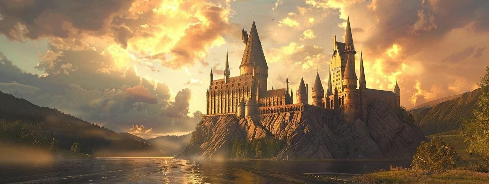

Bem-vindo ao mundo da fantasia
Explore as histórias arrebatadoras, os personagens marcantes e os universos fascinantes que transformaram o cinema.

Franquia Harry Potter
A franquia cinematográfica Harry Potter, um enorme sucesso de cultura pop criado pela autora J.K. Rowling, é composta por 8 filmes principais lançados pela Warner Bros. entre 2001 e 2011, que adaptam os sete livros originais.
A narrativa acompanha a jornada de amadurecimento do jovem bruxo Harry Potter e seus amigos Rony Weasley e Hermione Granger na Escola de Hogwarts, culminando na Segunda Guerra Bruxa contra Lord Voldemort.
Conheça os filmes
Explore mais sobre o universo mágico
Seu passaporte para Hogwarts está pronto! Mais do que uma história sobre magia, Harry Potter nos apresenta um universo repleto de amizade, coragem, descobertas e mistérios, que continua encantando milhões de pessoas ao redor do mundo. Afinal, Hogwarts sempre estará de portas abertas para aqueles que a ela recorrerem. Prepare-se para reviver essa jornada e descobrir tudo o que existe além das telas!
Descubra mais sobre Harry Potter